Forcella Mincigòs
NUOVO
Da Sappada per il passo Siera e la via normale
Ho sfruttato l'occasione di un breve soggiorno a Sappada per salire il fratello minore del famoso Siera, o Spitz (o anche Cima Undici) per gli autoctoni, più basso di soli 13m; partito alle 6.10 del mattino sono arrivato in cima alle 9.25, con un dislivello di 1300m su difficoltà escursionistiche, tranne per una paretina di I°+ poco sotto la cima.
La partenza antelucana è davvero apocalittica; s'intravede il profilo del Siera con l'omonimo passo a destra.
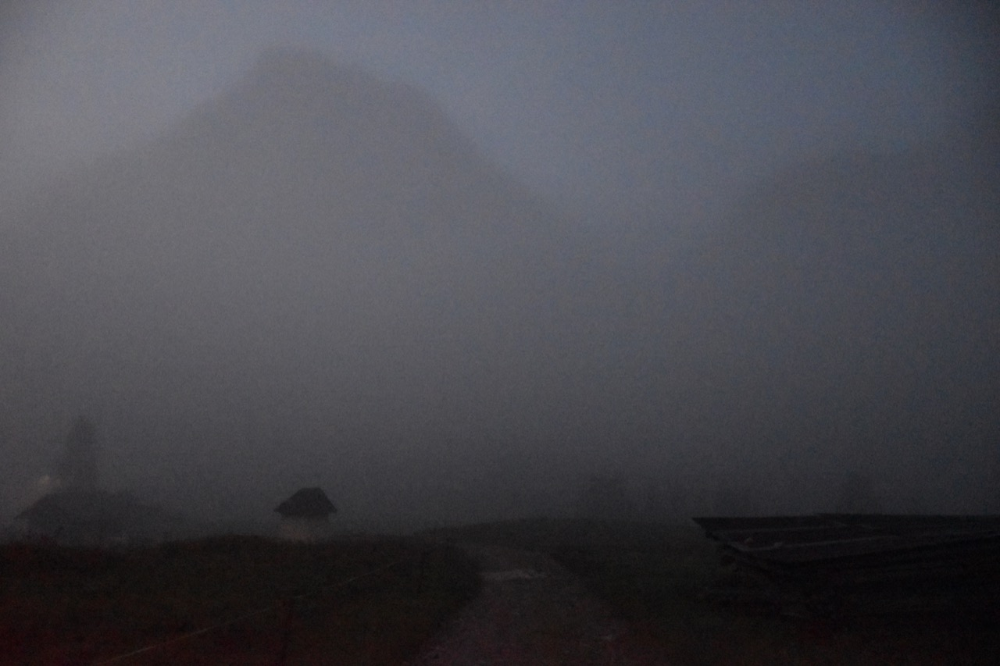L'alba mi sorprende ancora nel bosco.
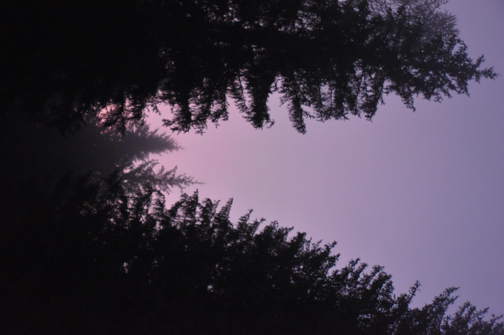Prime luci sulla cresta del Ferro; il Rìghile è la penultima cima (si nota la ripida rampa erbosa su cui passa la via normale).
L'alba sulla Terza Piccola (a sx) sul monte del Ferro (a dx); Sappada sotto le nubi mattutine.
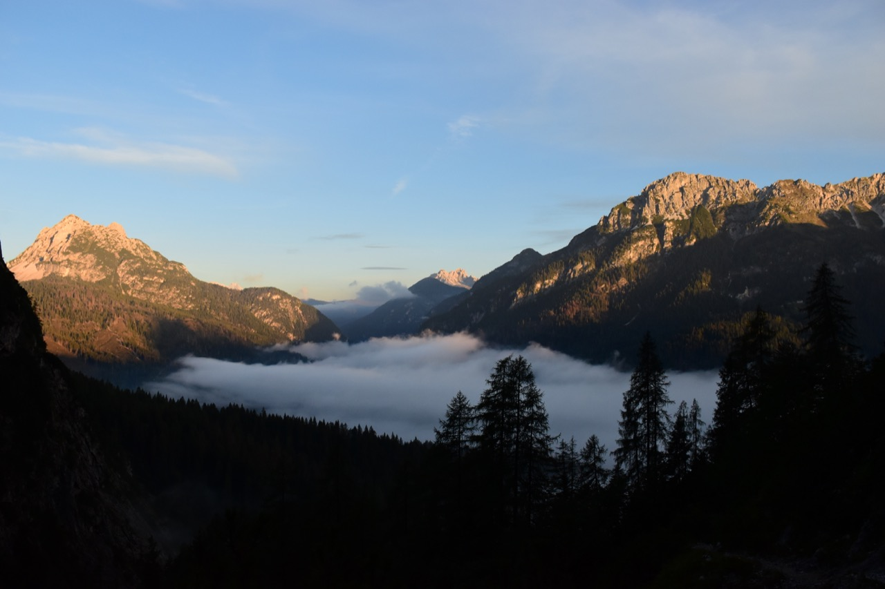Dalla casera Siera si prende il ripido sentierino che porta al catino racchiuso fra il Siera e il Piccolo Siera. Si percorre poi l'evidente cengione in centro alla foto che permette di montare sul costone Sud-Ovest del Piccolo Siera.
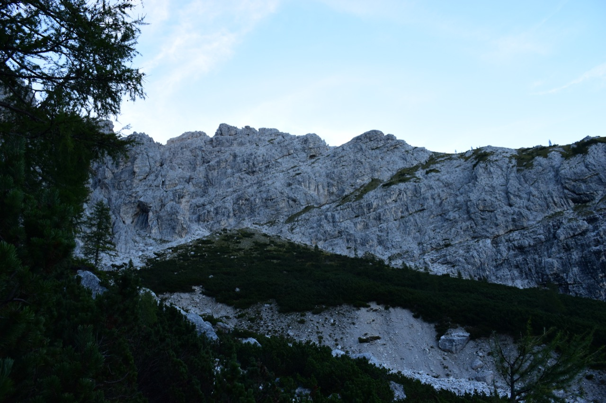Si ignorano le tracce che portano ai canaloni Sud-Ovest e Sud del Siera (foto); i bollini spariscono, ma la via costellata di ometti.
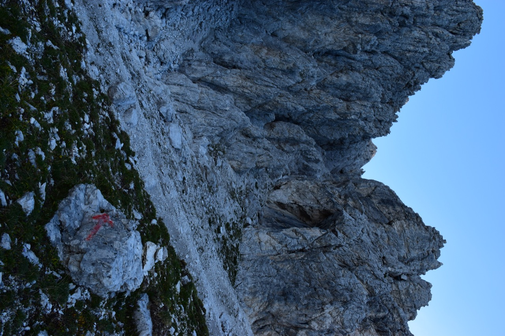Dal costone Sud-Ovest si sale pochi metri e si imbocca una provvidenziale e comoda cengia che immette sul fondo del canalone, per poi salire subito dopo sull'altra sponda con dei semplici passaggi di I°.
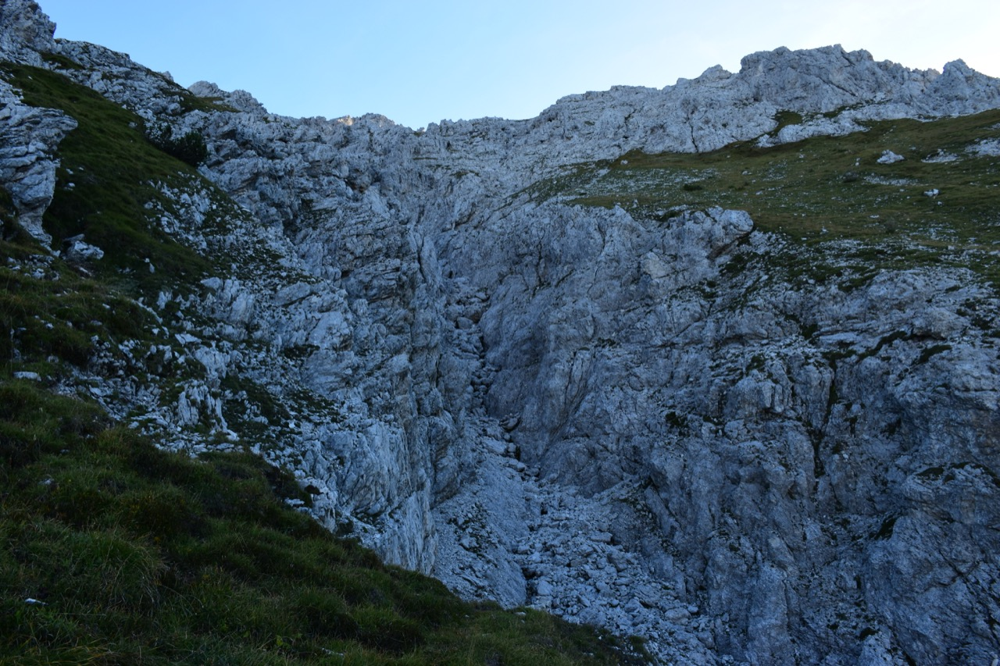A questo punto si rimonta il versante (prima sul prato, poi fra le rocce) in direzione della cima, guidati dagli ometti.
Si arriva su una crestina, dove un'orrida forcella permette di affacciarsi sulla val Pesarina.
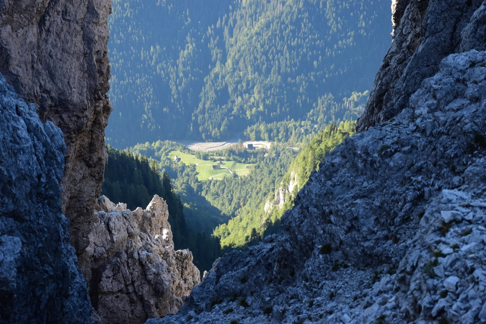Il panorama si apre sulla pianura, sommersa da un mare di nubi. Si distinguono le catene del Montasio e del Canin in fondo.
Finalmente in vista della cima (a sx) e dell'anticima (a dx), con l'evidente cengia che permette di salire su quest'ultima.
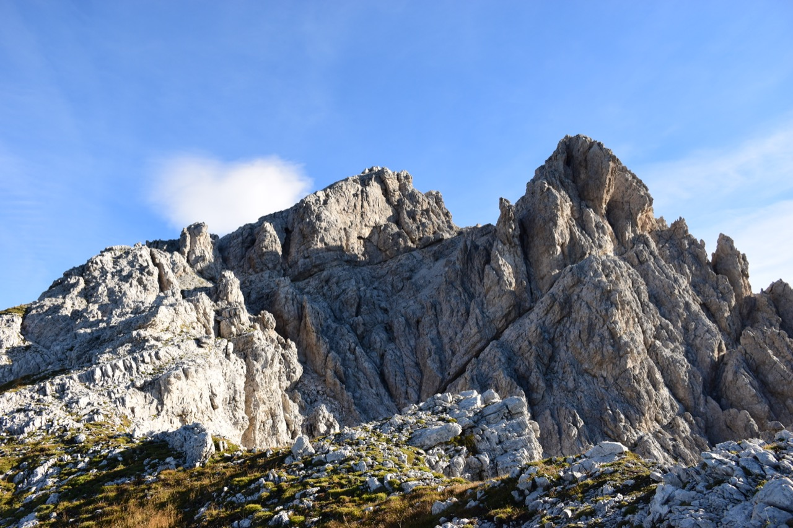Appena imboccata la cengia si gira a sinistra risalendo il canalino detritico di sinistra fino ad un netto e stretto intaglio. Da una parte verso Sappada...
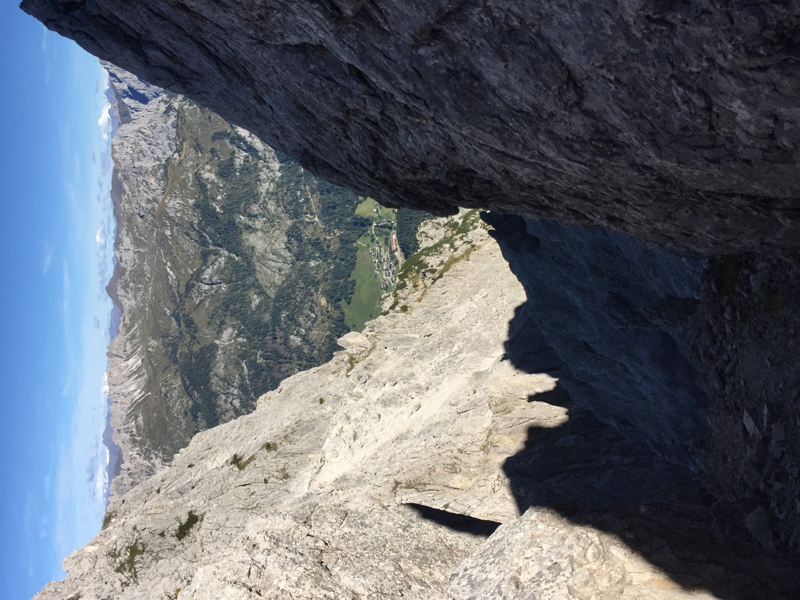... e dall'altra verso meridione. Dall'intaglio bisogna superare una paretina di I°+ di 4-5 metri, poi per sfasciumi si è subito in vetta.
Il panorama dalla cima è eccezionale; in foto, da sx a dx, il Siera, Sappada sovrastata dalla cresta del Ferro e dal Lastroni, la val Sesis dominata dal gruppo del Peralba-Chiadenis.
Il misterioso gruppo del Rinaldo (da sx a dx, Rinaldo, Croda dell'Oregion, Campanile Luisa, Campanili del Rinaldo).
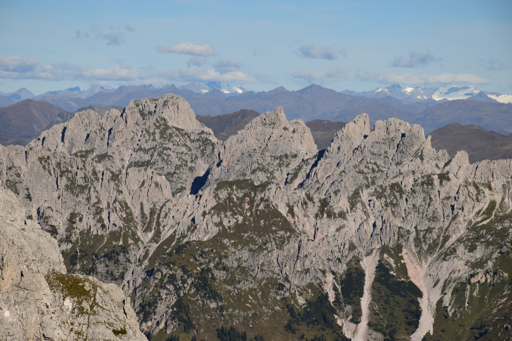Verso For Davuatri; sullo sfondo gli scuri monti di Fleons, la zona di Bordaglia e i monti di Volaia.
Un bello scorcio verso malga Tuglia (raggiunta poi lo stesso giorno al pomeriggio!), fra il monte Tuglia (creto di Tuio) e il monte Geu.
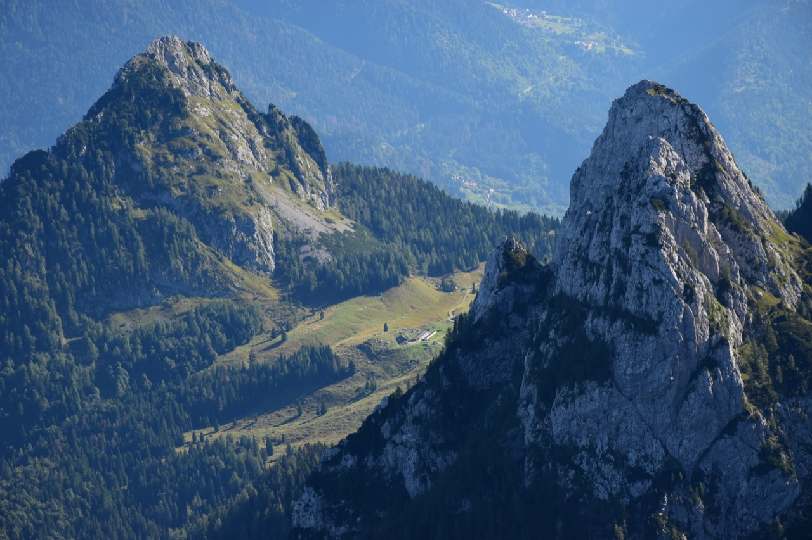In primo piano il monte Cimon (o Creta di Entralàis) che sovrasta il vallone di Geu, con a sx lo "zoccolo nord" e a dx la Gobba di Ponente (vedi Gaberscik); sbuca a dx del Cimon il monte Plèros.
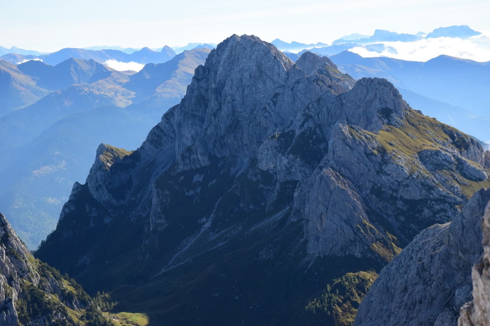Panorama superbo verso l'alta val Pesarina. A dx il gruppo del Creton di Culzei.

Mi ha subito colpito la dimenticata e discontinua cresta del Tudaio di Razzo; si notano anche le tre cime del Tiàrfin. Sullo sfondo la Cima dei Preti, i Monfalconi e il Cridola.